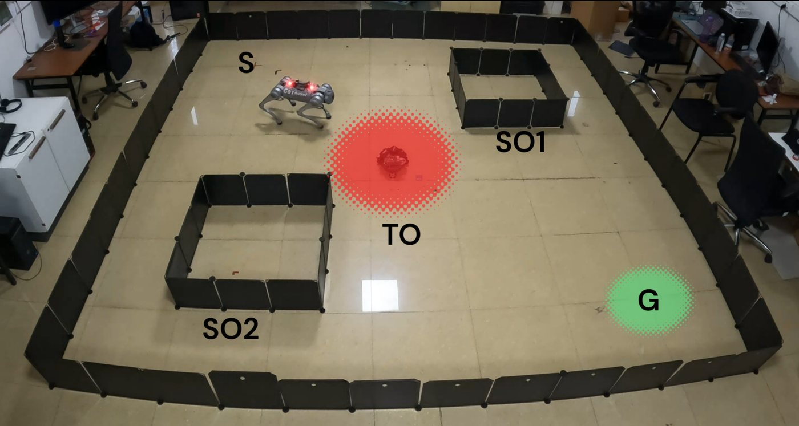
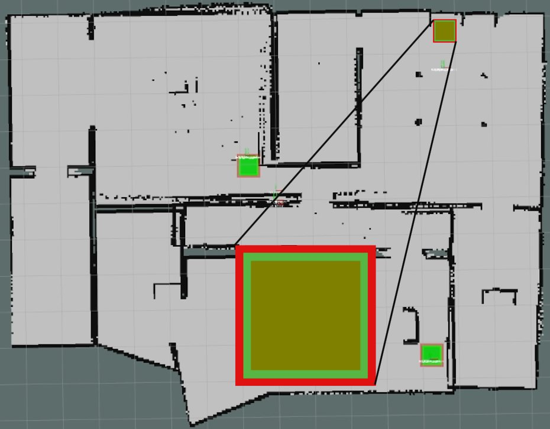

Robotics · Control · Mechatronics · Autonomy
Manas Sashank Juvvi
I model what can be modelled, learn what cannot, and prove what matters.
MSc Systems & Control, TU Delft · Former Research Associate, Indian Institute of Science, Bangalore
Engineer working at the meeting point of modelling, optimisation, control and machine learning. I build models of dynamical systems from measurements and from first principles, design the controllers, planners and reinforcement learning policies that act on them, and quantify how far the result can be trusted before it goes into service.
My background is robotics and mechatronics, covering mobile robots, UAVs, multi-robot systems, race cars and quadrupeds, and the same methods apply to any system that can be measured and has to make decisions under uncertainty. MSc in Systems and Control from TU Delft, with two first-author papers at ICRA and IROS.
- 8.5/10MSc thesis grade at TU Delft
- 44%more robust than the leading baseline, at 4× less compute
- 0collisions for my multi-robot exploration framework in every comparison run
- 6robot platforms taken from simulation to hardware
What I bring
Capabilities
Modelling from data and physics
Give me measurements and I will give you a model. I combine data-driven methods such as Gaussian processes and system identification with first-principles structure, so the model generalises instead of memorising the data it was fitted on.
Statistical guarantees
PAC bounds, conformal prediction and the scenario approach turn a finite set of experiments into a quantified level of confidence. None of it is specific to robots, which is exactly why it transfers to energy, manufacturing, finance or healthcare.
Optimisation & control
Model predictive control, trajectory optimisation, symbolic control and barrier-style safety constraints. I choose between them based on what the system needs to guarantee, not on habit.
Learning-based control
Reinforcement learning for systems whose dynamics are out of reach, wrapped in enough structure that what it learns can be reused, planned with and checked.
Autonomy & navigation
Perception, localisation, mapping and planning integrated into complete stacks, with temporal-logic task specifications and multi-robot coordination when the mission calls for them.
Mechatronics & hardware
Electronics, mechanical assembly, embedded compute and low-level control. I am as comfortable debugging a motor driver as a planner, and I have taken a robot from a sketch to a field-tested prototype.
The common thread
How I work
I reframe before I optimise
The biggest gains in my projects came from changing how a problem was posed rather than from tuning parameters. Safety became a property of the design instead of something tested afterwards, and hard learning problems became planning problems that reuse what was already learned.
I make results trustworthy
A result is only useful if you know when to believe it. Whether through formal proofs, temporal-logic specifications or statistical certificates, my work comes with a clear statement of what it guarantees and where that guarantee ends.
I own it end to end
I take work from a blank page through theory, simulation and hardware, and I stay with it when the real world disagrees with the simulator. A failed field test is where I learn the most, so I trace it across perception, control and hardware until it is fixed.
I stay curious across fields
My projects have drawn on formal methods, reinforcement learning, optimisation, statistics and hands-on electronics. I pick up new tools quickly when a problem needs them, and I do my best work in mixed teams of mechanical, electrical and software engineers.
Selected work
Featured projects
MSc thesis · TU Delft
Reinforcement learning controllers you can certify
A train, certify and refine loop that certifies a learned policy against a formal specification, finds the conditions where it is weakest, and retrains until the guarantee holds.
Read the project →
IROS 2025 · IISc
Robots that meet deadlines without a model
Learned motion skills and a time-aware planner let a TurtleBot3 and a Unitree Go1 take on new timed tasks, with plans ready in under five seconds.
Read the project →
ICRA 2024 · IISc
Multi-robot exploration with zero collisions
Correct-by-construction controllers let a mixed robot team map unknown spaces safely, in about half the time of standard methods or less.
Read the project →Open to
Roles in robotics, control, mechatronics and autonomy, and in any team that needs systems modelled from data, optimised, and controlled with guarantees. I am based in Delft, the Netherlands. Write to me at manas.juvvi@gmail.com.